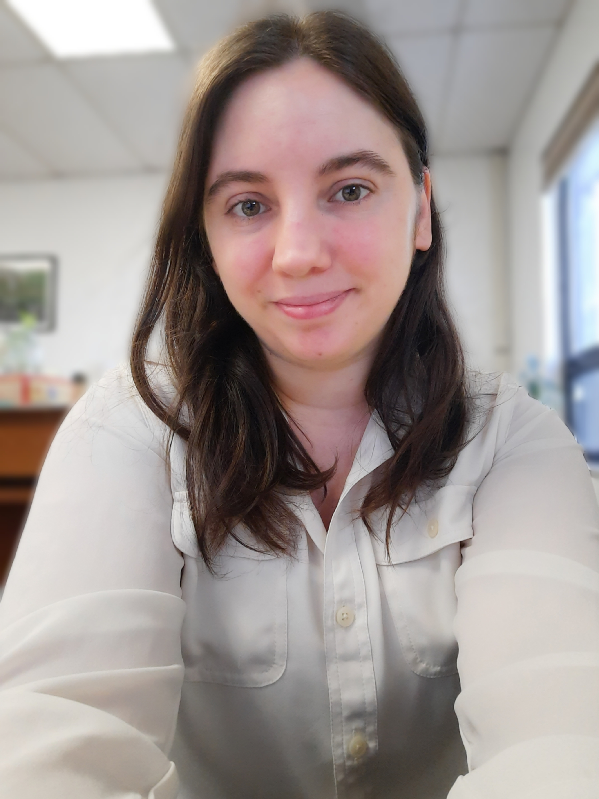

When I graduated from LIU Post with a degree in Art History, I quickly entered the working force with an internship at a gallery, which later became a job managing their webshop. This position defined much of my later career, guiding me in the direction of Ecommerce and Digital Marketing. As I continued in this direction, my curiosity and love for learning would not permit me to sit still. If I am doing something, I always want to do it just a little bit better. I always want to learn just a little bit more. I have never once just left well enough alone. It is due to this curiosity that I began taking online courses related to my current position as an Ecommerce Coordinator, and related topics such as digital marketing and web design. In each course I found something of value, but in every couse I found something truly inspiring. In these pursuits I have both reawakened my passion for design and writing, as well as found new passions in marketing and web design. Driven by creativity and curiosity, I love to blend the art of writing and design with the technicality of marketing and development. I have found that all of these have a little bit of both. There are technical formats for all types of writing. There is a creativity in building a website from nothing. I love both sides of all of these things, and I love operating at the points where they mix and mingle to make something unique and interesting.
Need help with your web design and devlopment? Or your Ecommcere shop and Digital Marketing? Contact Me Now to discuess a project!